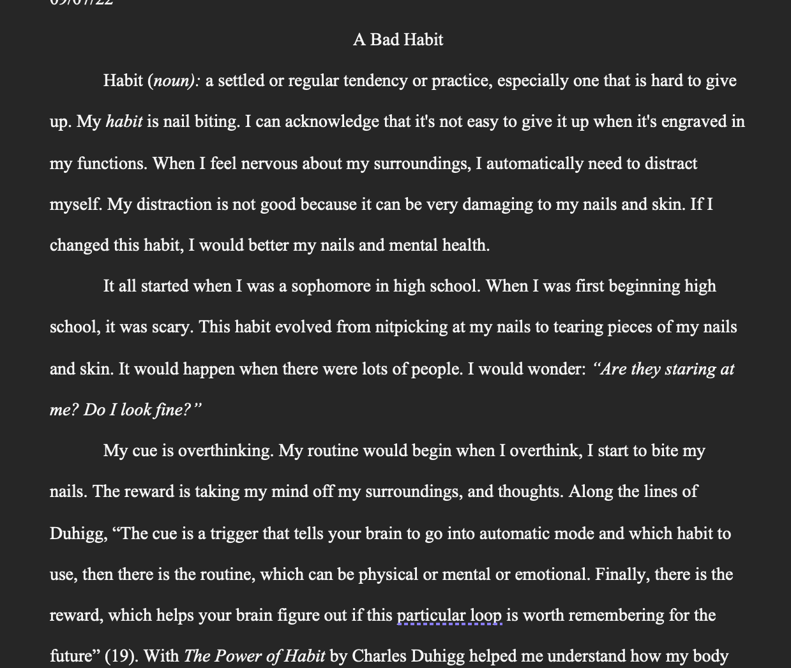

This essay was based on a class that made me rethink how I can break the bad habits that I had within myself. I had to read this book which was really eye-opening on why we do things out of routine and comfort. While writing the essay, I analyzed myself and had to take in different advice from the book.